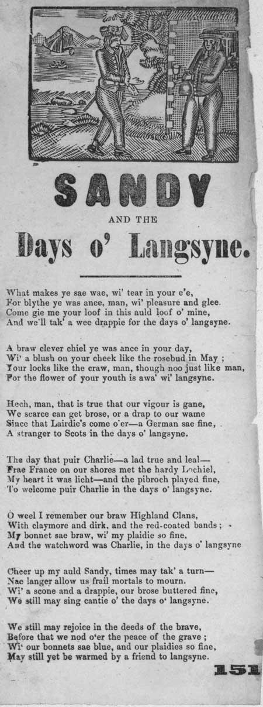

Sandy and the Days o' Langsyne
A Broadside Ballad
Tune - MélodieComposed by John Bruce (1720-1785)
Sequenced by Christian Souchon

|
1. What makes ye sae wae, wi' tear in your e'e,
For blythe ye was ance, man, wi' pleasure and glee. Come gie me your loof in this auld loof o' mine, And we'll tak' a wee drappie for the days o' langsyne. 2. A braw clever chiel ye was ance in your day, Wi' a blush on your cheek like the rosebud in May ; Your locks like the craw, man, though noo just like man, For the flower of your youth is awa' wi' langsyne. 3. Hech, man, that is true that our vigour is gane, We scarce can get brose, or a drap to our wame Since that Lairdie's come o'er a German sae fine, A stranger to Scots in the days o' langsyne. 4. The day that puir Charlie—a lad true and leal — Frae France on our shores met the hardy Lochiel, My heart it was licht—and the pibroch played fine, To welcome puir Charlie in the days o' langsyne. 5. O weel I remember our braw Highland Clans, With claymore and dirk, and the red.coated bands ; My bonnet sae braw, wi' my plaidie so fine, And the watchword was Charlie, in the days o' langsyne 6. Cheer up my auld Sandy, times may tak' a turn— Nae langer allow us frail mortals to mourn. Wi' a scone and a drappie, our brose buttered fine, We still may sing cantie o' the days o' langsyne. 7. We still may rejoice in the deeds of the brave, Before that we nod o'er the peace of the grave ; Wi' our bonnets sae blue, and our plaidies so fine, May still yet be warmed by a friend to langsyne. |
 Probable period of publication: 1860-1890 shelfmark: L.C.Fol.70(3a) |
1. Qu'est-ce donc qui t'attriste et fait pleurer tes yeux,
Toi l'ami des plaisirs, qu'on connut si joyeux? Viens donc placer tes mains entre mes veilles mains, Nous trinquerons ensemble à ces beaux jours anciens. 2. Tu fus, tout comme un autre, un bel et sage enfant, Et ta joue s'empourprait comme rose au printemps ; De tes boucles de jais, rien ne reste pourtant, Ta jeunesse a passé comme a passé le temps. 3. Comment n'aurions nous point perdu notre vigueur?, Pas le moindre brouet, pas la moindre liqueur Depuis que vint chez nous ce Germain délicat, Etranger à l'Ecosse et aux jours d'autrefois. 4. Le jour où le pauvre Charlie, - franc et loyal- Débarquant sur nos côtes rencontra Lochiel, Mon coeur a tressailli—le pibroch résonnait, En l'honneur de Charlie dans ces beaux jours passés. 5. O je me souviens bien de nos clans des Highlands, Des dagues, des claymors, des rouges houpelandes; De mon joli bonnet, de mon plaid si seillant, Le mot de passe était "Charlie" aux jours d'antan. 6. Courage, vieux Sandy, les temps peuvent changer— Nous, les frêles mortels cesserons de pleurer. Repus de bon pain blanc, de tartines beurrées, Nous chanterons gaiement commme aux beaux jours passés . 7. Proclamant nos hauts-faits à la face du monde, Avant de disparaître en la paix de la tombe, Parés de nos bonnets, de nos plaids si seillants, Puissions nous ouir l'appel de notre ami d'antan. (Trad. Ch.Souchon (c) 2006) |
|
"As this broadside contains a sentimental and nostalgic ballad on the subject of the failed Jacobite Risings, it must have been written long after 1746. With an end of verse refrain to remind people that these events took place a long time ago, the ballad praises Bonnie Prince Charlie and the Jacobite Clans, while it criticises the Hanoverian King, George I, and his heirs. The woodcut on this broadside is especially interesting, as the imagery clearly alludes to the famous 'king o'er the water' theme, in addition to showing traditional Jacobite symbols such as the white cockade and the
toasting glass
.
Early ballads were dramatic or humorous narrative songs derived from folk culture that predated printing. Originally perpetuated by word of mouth, many ballads survive because they were recorded on broadsides. Musical notation was rarely printed, as tunes were usually established favourites. The term 'ballad' eventually applied more broadly to any kind of topical or popular verse." Source: "The Word on the Street" National Library of Scotland
The melody (used by Burns for his poem "O whistle and I'll come") is an air composed by
John Bruce
(1720-1785), the "Red-wed Highlander from Braemar" who spent some time in Edinburgh Castle for his adherence to the cause of Bonnie Prince Charlie during the 1745.
Source: "The Fiddler's Companion" |
"
Puisque cette feuille volante présente une ballade sentimentale et nostalgique au sujet des soulèvements Jacobites avortés, elle doit avoir été écrite longtemps après 1746. La fin de chaque couplet rappelle que ces événements eurent lieu il y a longtemps, et, tandis que la ballade fait l'éloge du Bon Prince Charles et des Clans Jacobites, elle s'en prend au roi hanovrien, George I, et à ses héritiers. La gravure sur bois dont s'orne cette feuille est particulièrement intéressante par l'allusion explicite au thème du "roi au-delà des eaux", combinée avec des symboles traditionnels Jacobites tels que la cocarde blanche et le
verre à trinquer
.
Les premières ballades furent des chants narratifs dramatiques ou humouristiques issus de la culture populaire qui précéda l'imprimerie. Transmises à l'origine de bouche à oreille, beaucoup de ces ballades nous sont parvenues parce qu'elles furent imprimées sur les feuilles volantes. Il est rare que la notation musicale les accompagne, car les mélodies étaient habituellement des airs à la mode. Le terme de "ballade" finit par s'appliquer plus généralement à n'importe quelle sorte de poème populaire ou traitant de sujets d'actualité."
La mélodie (utilisée par Burns pour son poème "O whistle and I'll come") est un air composé par
John Bruce
(1720-1785), connu comme "le marié en rouge de Breamar" qui passa quelque temps au château d'Edimbourg en raison de son adhésion à la cause du Prince Charles en 1745.
Source: "The Fiddler's Companion" |